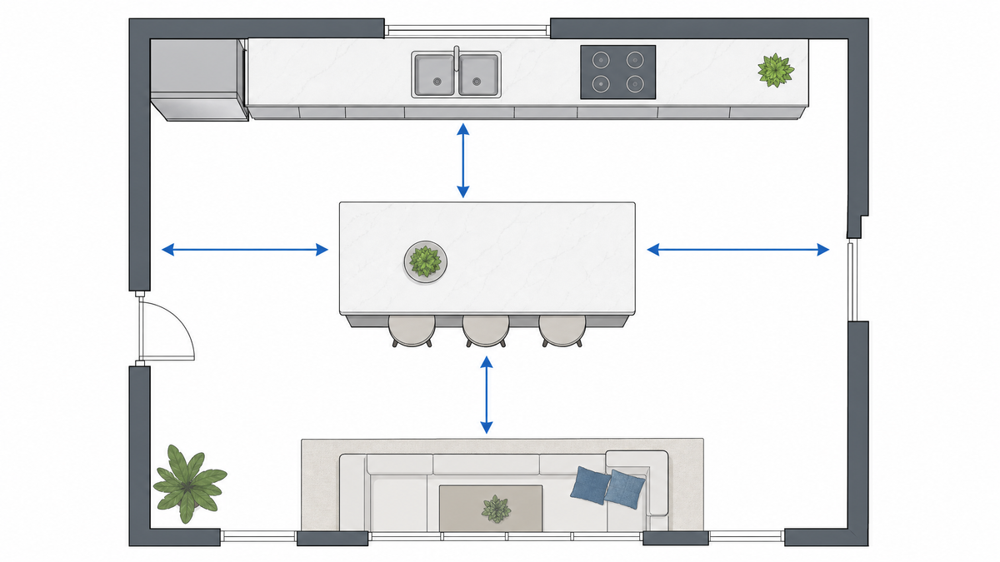
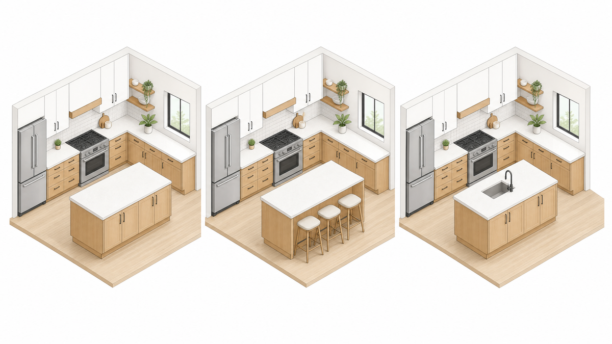
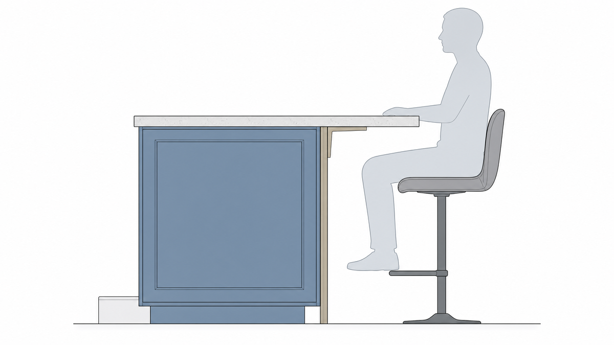
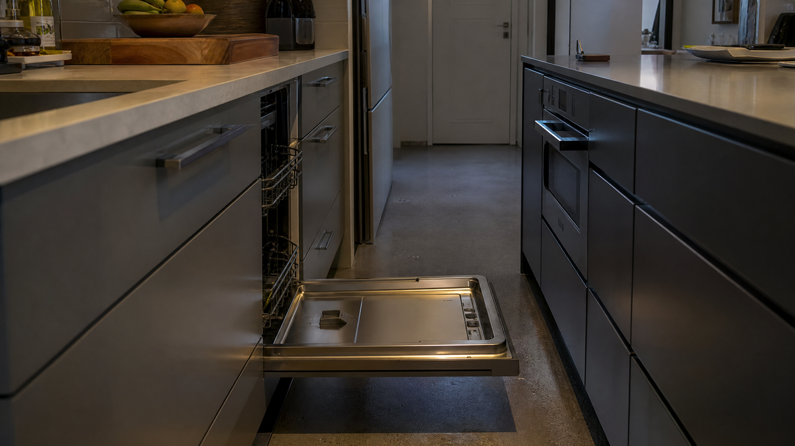

остров 1800×900 мм встаёт только в помещение шириной от 3500 мм: 600 мм основная линия + 1000 мм проход + 900 мм остров + 1000 мм второй проход. На каждого сидящего — 600 мм длины столешницы и свес 250–300 мм. Электрика: линия 3×2,5 мм² с автоматом 16 А, для варочной панели отдельная 3×6 мм² на 32 А. Вывод трассы до стяжки — 8 000–15 000 руб., после чистовой отделки — 20 000–45 000 руб. Ниже размеры, сметы 2026 года, пять ошибок с ценой переделки и чек-лист.
Остров считают по ширине, а не по площади
Кухня 12 м² может не принять остров, а кухня-гостиная 18 м² примет. Формула: глубина основной линии с фасадами и ручками (620–650 мм) + проход + глубина острова + второй проход.
| Сценарий | Расчёт по ширине | Нужно, мм |
|---|---|---|
| Остров 700 мм, проходы по 900 мм | 620 + 900 + 700 + 900 | 3120 |
| Остров 900 мм, проходы по 1000 мм | 620 + 1000 + 900 + 1000 | 3520 |
| Остров 900 мм, посадка, проходы 1100 и 900 мм | 620 + 1100 + 900 + 900 | 3520 |
Если проход меньше 900 мм, остров не работает: ящик 500 мм и открытая посудомойка 600 мм перекрывают его целиком. Для кухни 8–10 м² альтернатива — полуостров 1200–1600×650 мм или выносная столешница 350–450 мм.
СП 54.13330.2022 задаёт минимальную площадь кухни 8 м² (ниши — 5 м²), но расстояния между линиями мебели не нормирует: их задаёт эргономика. Глубину корпуса берите по ГОСТ 16371-2014 — 600 мм ±2 мм, реально с фасадом и ручкой 620–650 мм.

Размеры острова: три формата с ценами 2026 года
| Формат | Габариты, мм | Что помещается | Корпус и фасады, руб. | Кварц 20 мм, руб. |
|---|---|---|---|---|
| Компактный | 1200–1400 × 700–800 | 2 тумбы, 2 места | 55 000–95 000 | 40 000–70 000 |
| Универсальный | 1600–1800 × 850–900 | хранение, разделка, 2–3 места | 95 000–180 000 | 55 000–95 000 |
| Полноценный | 2000–2400 × 900–1000 | мойка или варка, 3–4 места | 180 000–380 000 | 75 000–140 000 |

Глубина по функции: 600–700 мм — хранение и разделка, 850–900 мм — посадка с одной стороны, 1000 мм — с двух (по 300 мм свеса). Высота рабочей поверхности 850–920 мм: под рост 160–170 см — 860 мм, под 175–185 см — 900–920 мм.
Проходы и посадка: арифметика без «на глаз»
- проход без открывания ящиков — от 900 мм;
- проход, где открываются ящики и посудомойка, — 1050–1200 мм;
- двое работают одновременно — от 1200 мм;
- на одного сидящего — 600 мм длины столешницы;
- свес под колени — 250–300 мм, при 300 мм и больше нужны скрытые кронштейны;
- табурет при столешнице 900 мм — сиденье 650–750 мм;
- до обеденного стола или дивана — 900–1000 мм: стул отъезжает на 350–450 мм.
Остров 1500 мм и три места — это 3 × 600 = 1800 мм. Комфортно сядут двое, третий будет плечом к соседу. Для трёх мест длина от 1800 мм, для четырёх — от 2400 мм.

Электрика острова: линии, кабели, автоматы
Остров без розеток превращается в дорогой стол. Набор и параметры по СП 256.1325800.2016 и ПУЭ 7:
| Потребитель | Кабель | Автомат | Мощность | Примечание |
|---|---|---|---|---|
| Розеточная группа, 4–6 гнёзд | 3×2,5 мм² | 16 А | до 3,5 кВт | УЗО 30 мА |
| Варочная панель, индукция | 3×6 мм² | 32 А | до 7,4 кВт | отдельная линия |
| Духовой шкаф | 3×2,5 мм² | 16 А | до 3,5 кВт | не на группу острова |
| Посудомоечная машина | 3×2,5 мм² | 16 А | 2,2 кВт | влажная зона, УЗО 30 мА |
| Подсветка и вентилятор вытяжки | 3×1,5 мм² | 10 А | до 1 кВт | отдельная группа |
Розетки — выдвижной блок в столешницу (4 500–18 000 руб.) или в боковину на высоте 100–150 мм от пола; второй вариант дешевле на 3 000–8 000 руб., но тянуться вниз. Для миксера и тостера хватает 2–3 гнёзд, для работы с ноутбуком добавьте модуль Type-C 30 Вт за 2 500–7 000 руб.
Трасса: гофра 20 мм в стяжке на глубине 30–40 мм или по потолку со спуском в канал ножки. Штробление по готовому полу и обход через плинтус — последний вариант, цена выше в 2–3 раза.
Мойка и варочная панель: самые дорогие узлы
Мойка требует подвода 16–20 мм и канализации 50 мм с уклоном 2 см на 1 м (СП 30.13330.2020). На дистанции 3 м до стояка перепад 6 см плюс толщина трубы: при стяжке 40–50 мм нужен подиум 70–120 мм или насосная система.
| Узел | Объём | Цена 2026, руб. |
|---|---|---|
| Подвод ХВС/ГВС | 2–6 м | 6 000–15 000 |
| Канализация 50 мм | 2–4 м | 7 000–18 000 |
| Насосная система при сложном сливе | 1 комплект | 28 000–65 000 |
| Гидроизоляция зоны мойки | 2–4 м² | 2 500–7 000 |
| Вытяжка в столешницу | 1 шт. | 35 000–90 000 |
| Потолочная вытяжка с монтажом | 1 шт. | 55 000–160 000 |
Варочная панель: по 300 мм рабочей поверхности с каждой стороны, 500–600 мм от края острова до конфорки, 650 мм до вытяжки для индукции и 750 мм для газа. Воздуховод 150–200 мм и 2–5 м трассы — 6 000–18 000 руб., декоративная коробка — 8 000–25 000 руб.
Для квартиры выгоднее остров без мойки и варки: дешевле на 40 000–120 000 руб. Оставьте разделку, хранение и посадку, а мойку и варку держите у стены, где есть стояк и вентканал.
Свет над островом
Один светильник по центру комнаты ставит тень от человека на разделочную доску. Рабочая поверхность кухни — 300 лк по СП 52.13330.2016, практический комфорт для нарезки — 300–500 лк.
- 2–3 подвеса на длину 1600–2200 мм, шаг между центрами 500–700 мм;
- высота подвеса над столешницей 700–900 мм;
- 3000–4000 К для рабочей зоны, 2700 К — для посадки;
- CRI 90+, иначе мясо и зелень выглядят серыми;
- подсветка под столешницей — для посадки, готовить под ней неудобно.
Два расчёта: кухня 9 м² и кухня-гостиная 20 м²
Кухня 9 м², 3,0 × 3,0 м. Основная линия 2700 мм, холодильник 600 × 650 мм. Проверяем остров 1400 × 800: 3000 − 620 − 1000 − 800 = 580 мм на второй проход — это щель. Вывод: только полуостров 1300 × 650 мм со свесом 250 мм.
| Смета полуострова 1300×650 | Объём | Цена, руб. |
|---|---|---|
| Корпус и фасады | 1 комплект | 38 000–65 000 |
| Столешница ЛДСП 38 мм | 1,2–1,5 м.п. | 9 000–18 000 |
| Кронштейны под свес | 2 шт. | 3 500–8 000 |
| Розеточная точка с монтажом | 1 шт. | 6 000–12 000 |
| Сборка и установка | 1 этап | 8 000–18 000 |
| Итого | 64 500–121 000 |
Кухня-гостиная 20 м², 5,2 × 3,9 м. Линейная кухня 3600 мм, остров 1800 × 900 мм, проходы 1100 и 1050 мм: 3900 − 620 − 1100 − 900 − 1050 = 230 мм запаса на плинтус, кривизну стен и подоконник. Схема рабочая.
| Смета острова 1800×900 | Количество | Цена, руб. |
|---|---|---|
| Корпус | 1 комплект | 62 000–110 000 |
| Фасады МДФ, эмаль | 4–6 шт. | 35 000–75 000 |
| Ящики с доводчиками | 6 шт. | 24 000–48 000 |
| Столешница кварц 20 мм | 1 шт. | 55 000–95 000 |
| Розеточный блок в столешницу | 1 шт. | 7 000–18 000 |
| Электромонтаж | 1 этап | 10 000–22 000 |
| Сборка и установка | 1 этап | 15 000–28 000 |
| Итого | 208 000–396 000 |
Пять ошибок и их цена
- Проход 800 мм. Человек проходит боком, посудомойка не открывается. Переделка по глубине — 20 000–70 000 руб., перенос розеток — 8 000–18 000 руб., новая столешница — 15 000–95 000 руб.
- Посадка со стороны основного прохода. Стул отъезжает на 350–450 мм, проход 1000 мм превращается в 550–650 мм. Перенос — 10 000–35 000 руб. плюс столешница 12 000–80 000 руб.
- Свес 150–180 мм. Колени упираются в фасад через пять минут. Переделка столешницы с усилителями — 8 000–45 000 руб.
- Остров без выведенной электрики. Штробление по готовому полу и потолочный обход — 20 000–45 000 руб. вместо 8 000–15 000 руб. до стяжки.
- Вытяжка без вентканала. Угольный фильтр убирает запах, но не жир: фасады гостиной покрываются плёнкой. Воздуховод 150 мм — 6 000–18 000 руб., приточный клапан — 4 000–12 000 руб.

Порядок работ
- Замер в 6–8 точках по каждой стене: перепад 20–35 мм уже съедает проход.
- Нарисуйте основную линию с глубиной 620–650 мм, учтите ручки, радиатор, подоконник, наличники.
- Заложите проходы от 900 мм и 1050–1200 мм там, где открываются ящики и техника.
- Определите одну-две функции острова: хранение, разделка, посадка, мойка, варка.
- Посчитайте посадку: 600 мм на человека, свес 250–300 мм.
- Разметьте трассы: розетки 3×2,5 мм², варка 3×6 мм², вода 16–20 мм, канализация 50 мм.
- Проверьте уклон канализации: 2 см на 1 м, на 3 м — 6 см перепада.
- Сравните столешницы: ЛДСП 38 мм дешевле кварца на 35 000–80 000 руб. на изделие 1,8 м.
- Вынесите контуры на пол малярным скотчем в масштабе 1:1 и поживите с ними два дня.
- Заложите резерв 5–10% сметы на доборы, кронштейны и нестандартные панели.
Чек-лист
- проходы вокруг острова от 900 мм, с открыванием ящиков — 1050–1200 мм;
- 600 мм длины столешницы на каждого сидящего;
- свес 250–300 мм, при 300 мм и больше — скрытые кронштейны;
- глубина 600–700 мм без посадки, 850–900 мм с посадкой;
- линия 3×2,5 мм² с автоматом 16 А и УЗО 30 мА;
- варочная панель — отдельная линия 3×6 мм² на 32 А;
- уклон канализации 2 см на 1 м проверен до стяжки;
- 300–500 лк на рабочей поверхности, 2–3 подвеса с шагом 500–700 мм;
- контуры острова вынесены на пол в натуральную величину;
- резерв 5–10% в смете.
Вопросы и ответы
Какая минимальная ширина кухни для острова?
3120 мм для острова 700 мм с проходами по 900 мм. Для острова 900 мм с посадкой и проходами 1000–1100 мм — от 3520 мм.
Можно ли поставить остров на кухне 9 м²?
Полноценный — нет: при ширине 3,0 м второй проход выходит 580 мм. Замена — полуостров 1300–1600 × 650 мм со свесом 250 мм.
Сколько розеток нужно на острове?
2–3 гнезда для техники и отдельная линия на варочную панель. Кабель 3×2,5 мм², автомат 16 А, УЗО 30 мА.
Нужна ли вытяжка, если варочная панель на острове?
Да. До вытяжки 650 мм для индукции и 750 мм для газа. Воздуховод 150–200 мм выводят в вентшахту.
Какой свес столешницы нужен для посадки?
250–300 мм под колени плюс 350–400 мм зоны ног. Свес больше 300 мм требует скрытых кронштейнов.
Что дешевле — остров или полуостров?
Полуостров 1300×650 мм — 64 500–121 000 руб., остров 1800×900 мм — 208 000–396 000 руб. с кварцем и электромонтажом.